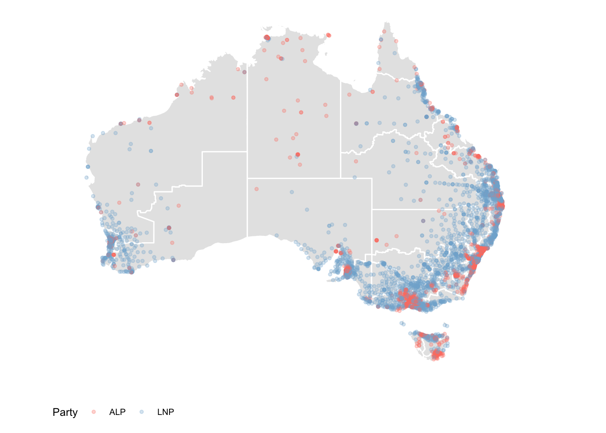
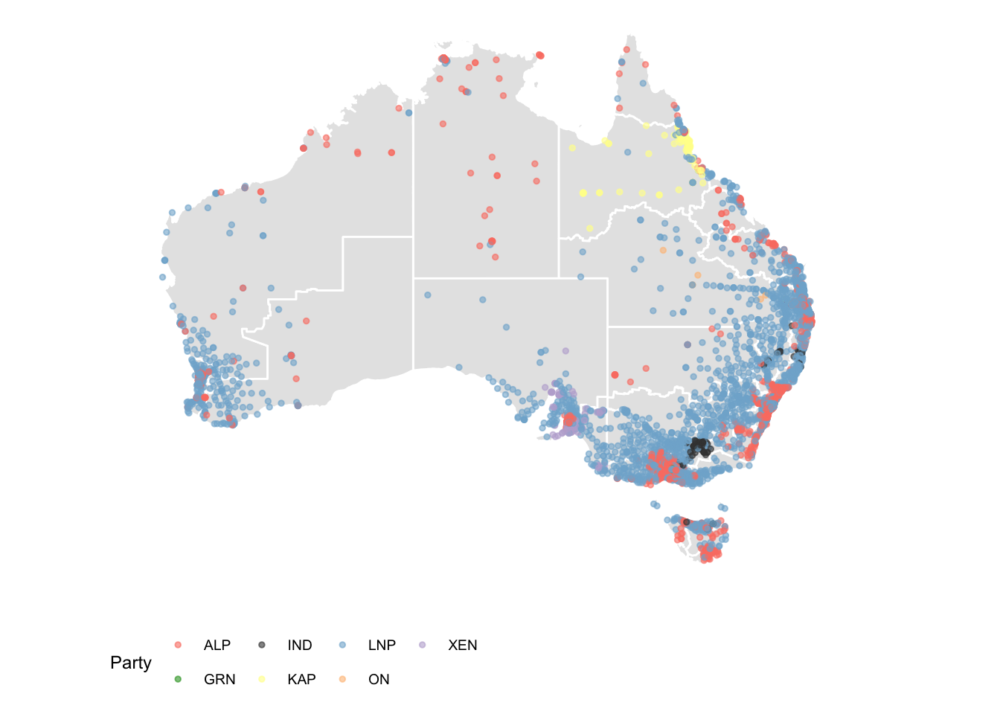

vignettes/plotting-polling-stns.Rmd
plotting-polling-stns.RmdThis vignette demonstrates how to plot the polling booths on a map of
the Australian electorates. The polling booth locations for each federal
election (from 2001 to 2016) can be downloaded from http://results.aec.gov.au/.
Coordinates for 2001 and 2004 polling booths are obtained by matching
polling booth ID and name with later elections. Those without
coordinates in 2004 were filled using Google Maps API,
using the latest ggmap package from github.
library(ggthemes)
nat_map16 <- nat_map_download(2016)
nat_data16 <- nat_data_download(2016)
ggplot(data=nat_data16, aes(map_id=id)) +
geom_map(map=nat_map16, fill="grey90", colour="white") +
geom_point(data=stns, aes(x=Longitude, y=Latitude), colour="red", size=1, alpha=0.3, inherit.aes=FALSE) +
xlim(c(112,157)) + ylim(c(-44,-11)) +
theme_map() + coord_equal()Election results are provided at the resolution of polling place, but
must be downloaded using the functions
firstpref_pollingbooth_download,
twoparty_pollingbooth_download or
twocand_pollingbooth_download (depending on the vote type).
We can use this information to color the points. The two files need to
be merged. Both have a unique ID for the polling place that can be used
to match the records. The two party preferred vote, a measure of
preference between only the Australian Labor Party (ALP) and the
Liberal/National Coalition (LNP), is downloaded using
twoparty_pollingbooth_download. The preferred party is the
one with the higher percentage, and we use this to colour the points
indicating polling places.
This gives a richer look at the party preferences across the country. You can see that although the big rural electorates vote for LNP overall, some polling places would elect the ALP, e.g. western NSW around Broken Hill. This data would look far more interesting if the data also contained the minority parties, because there must be some polling places where the majority vote would be for a minor party, since there are some minor party representatives in the House.

The two candidate preferred vote (downloaded with
twocand_pollingbooth_download) is a measure of preference
between the two candidates who received the most votes through the
division of preferences, where the winner has the higher percentage.

This map shows which party had the most support at each polling booth, and we see that support for minor parties are clustered in different regiond. An independent candidate has lots of support in the electorate of Indi (rural Victoria), One Nation party is backed by parts of rural Queesland, and other parties are popular in northern Queenaland and around Adelaide. Again we see the cities strongly support Labor.